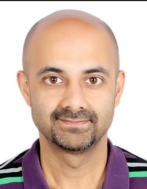

AI & Machine Learning
Designing intelligent systems that move from experimentation to production with clarity and purpose.
AI/ML • Computer Vision • Distributed Systems
Technology leader building intelligent systems with the rigor of engineering and the pragmatism of execution.
I work across machine learning, computer vision, and large-scale software platforms—turning complex technical ideas into useful, scalable systems.

About
Technology leader with two decades of hands-on experience in AI/ML, computer vision, and distributed systems. I enjoy leading technical initiatives, shaping scalable architectures, and helping teams deliver thoughtful solutions to hard problems.
My work is grounded in engineering discipline, cross-functional collaboration, and a focus on building systems that are both technically strong and useful in practice.
Expertise
Designing intelligent systems that move from experimentation to production with clarity and purpose.
Building vision-driven solutions that connect perception, data, and real-world decision making.
Creating scalable, resilient platforms that support growth, reliability, and operational excellence.
Leading technical strategy, execution, and collaboration across teams working on complex systems.
Selected Work
Building systems that translate models, data, and experimentation into dependable real-world capabilities.
Developing computer vision solutions that connect algorithmic depth with measurable outcomes.
Designing distributed software platforms that balance performance, maintainability, and reliability.